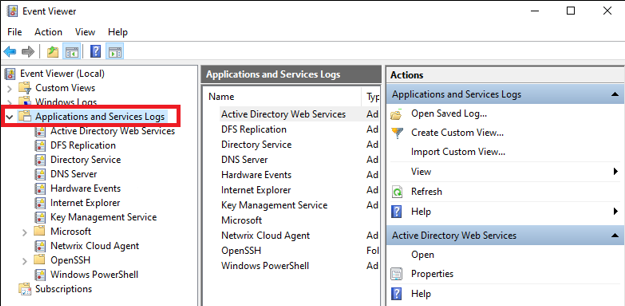
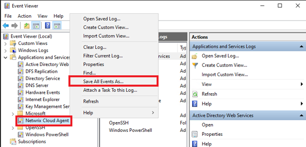

Question
How can you export and compress the Netwrix Cloud Agent event log?
Answer
The Netwrix Cloud Agent event log can be saved and zipped using either the Command Prompt or the Event Viewer. The following steps will guide you through each method:
NOTE: Perform these steps on the server where the Netwrix Cloud Agent is installed.
Export Cloud Agent event log via Command Prompt
Execute the following command in an elevated Command Prompt line:
wevtutil epl "Netwrix Cloud Agent" %userprofile%\desktop\NCA.evtxThe exported Cloud Agent event log will appear on your Desktop.
Export Cloud Agent event log via Event Viewer
-
Open Event Viewer.
-
Expand the Applications and Services Logs folder in the left pane.

-
Right-click the Netwrix Cloud Agent log file and select Save All Events As....

-
Name the file and click Save.
-
Once the file is saved, right-click it and zip the file.